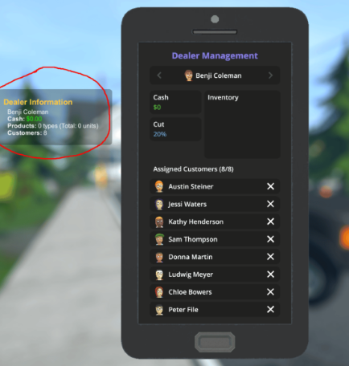
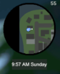
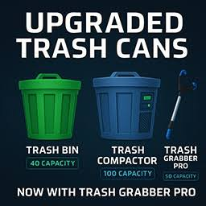

Dit is een fantastische mod die helpt je met extra info over al je dealers denk aan hoeveel geld ze al hebben.

Deze mod helpt je door een kleine map toe te voegen rechtsboven in je scherm dit is handig want dan hoef je niet elke keer op 'M' te klikken als je de map wil zien.

Met deze Schedule 1 mod kun je meer vuilnis oppakken en kun je dus meer geld verdienen met het oppakken van afval.